Big Cat Bang @ Ginza Six
Pi Photonics
Suzusan Shibori Light
Minna no Mori Gifu Media Cosmos
Mino Town
Mino Washi Paper Making
X's Factory
Yamada-san Porcelain
Yusai-tei Textile Studio
Monk Ittoku-san: Zen & Healing Light
Kojima Shoten
POJ Studio
Zen Night Walk Kyoto
Eriko Horiki Showroom
Hosoo Textile Gallery/Showroom
Hiroshi Sugimoto Gallery
Valley Gallery
Chichu Art Museum
Teshima Art Museum
Art Houses
Benesse House Museum